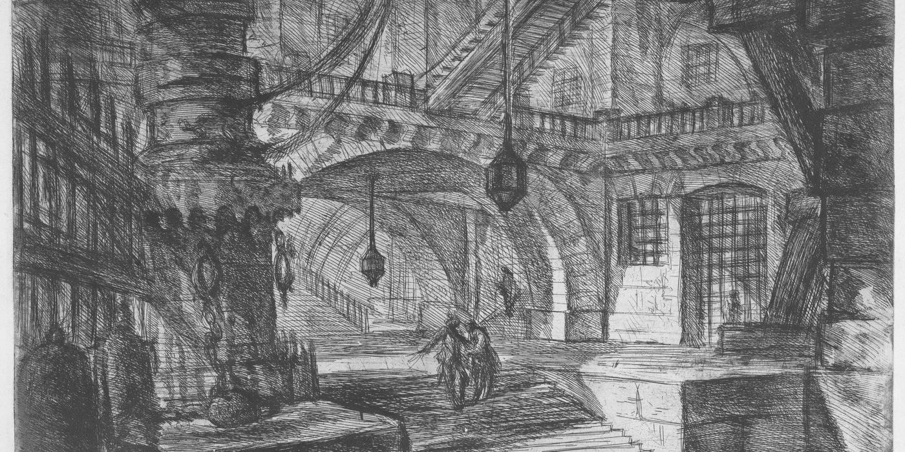

Professor · Pesquisador · Advogado
Luiz Eduardo Dias Cardoso
Professor de Direito Penal, Processo Penal e Análise Econômica do Direito no Unicesusc, doutorando e mestre em Direito pela UFSC. Pesquisa nas interseções entre essas áreas.
- Doutorando em Direito (UFSC)
- Professor no Unicesusc
- Ex-professor substituto (UFSC)
- Podcast Crime&Economia
Neste site
Sobre e currículo
Formação, experiência acadêmica e profissional, grupos de pesquisa e contatos.
Publicações e produções
Livros, artigos, capítulos, traduções, monografias e entrevistas.
Aulas
Disciplinas de Direito Penal, Processo Penal e Análise Econômica do Direito, com links úteis e indicações.
Ferramentas
Régua das Penas, Cárcere em Números, Encarcerômetro, Justiça Criminal em SC, calculadora de dosimetria e gerador de referências ABNT.
Links úteis
Política criminal, dados do sistema prisional, legislação, STJ, revistas e recursos acadêmicos.
Podcast Crime&Economia
Conversas sobre crime, punição e incentivos.
Orientação de TCC
Manual para orientandos: estrutura, método, entregas e uso de inteligência artificial.
Em destaque
Penas cominadas em abstrato, em escala de raiz quadrada; barra cheia, reclusão; contorno, detenção. Conferidas no Planalto (374 dispositivos).
Régua das Penas
As penas cominadas de todos os tipos da Parte Especial na mesma régua, com os marcos de 1, 2 e 4 anos.
DadosEncarcerômetro
Quanto o poder público gasta com o sistema prisional desde 1º de janeiro, em estimativa que se atualiza a cada segundo.
DadosCárcere em Números
População prisional, vagas e déficit por unidade da federação, com o recorte de Santa Catarina (SENAPPEN, dezembro de 2025).